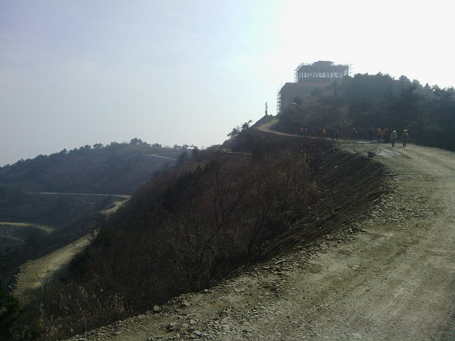
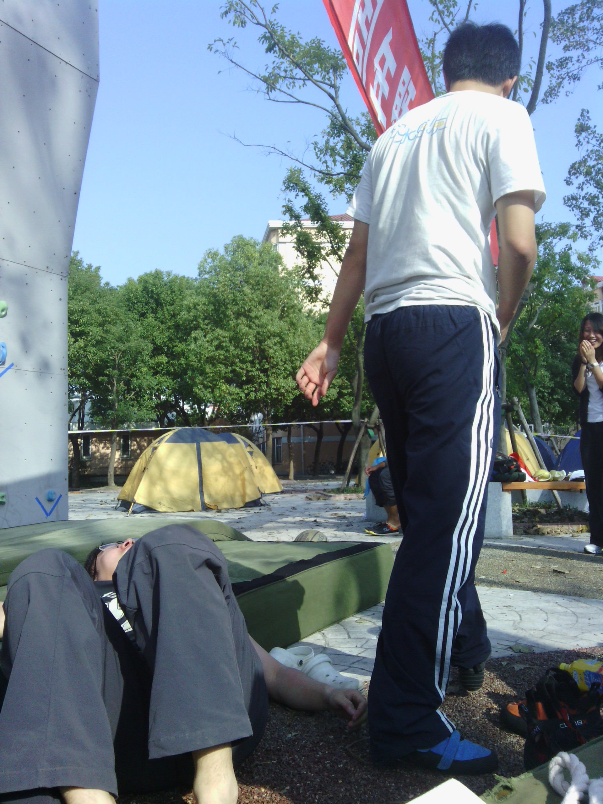
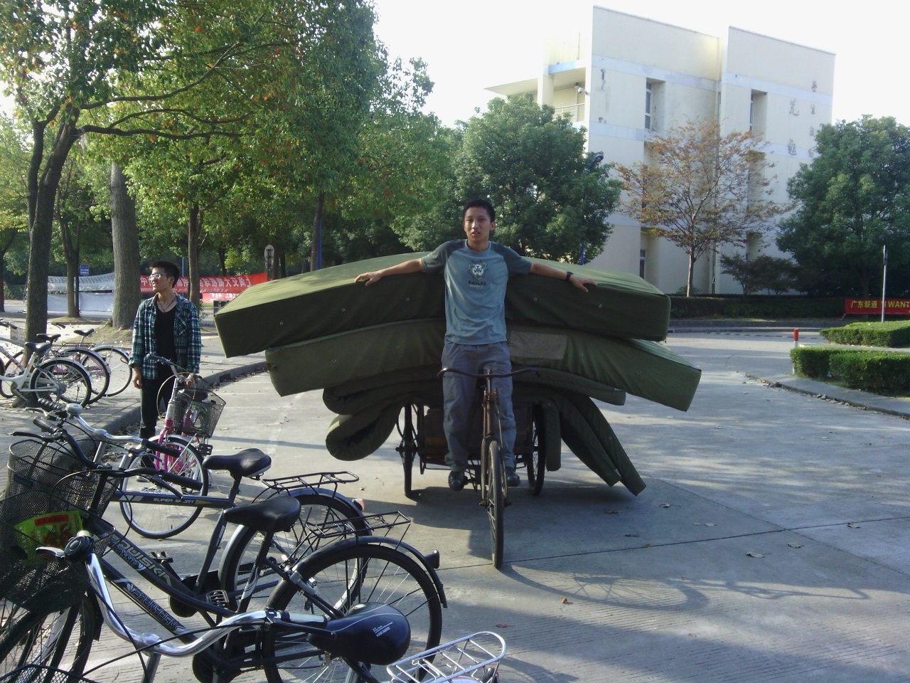
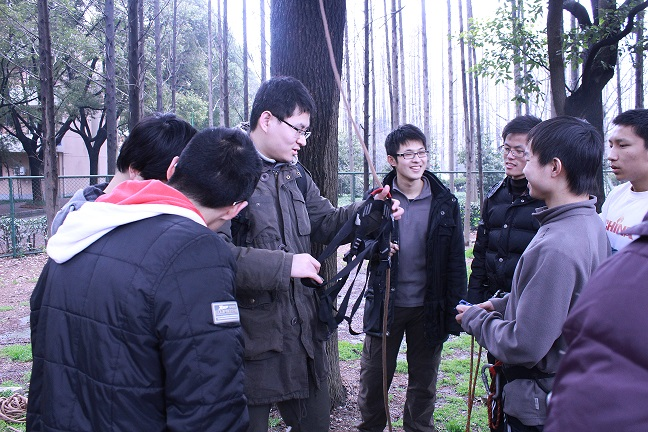
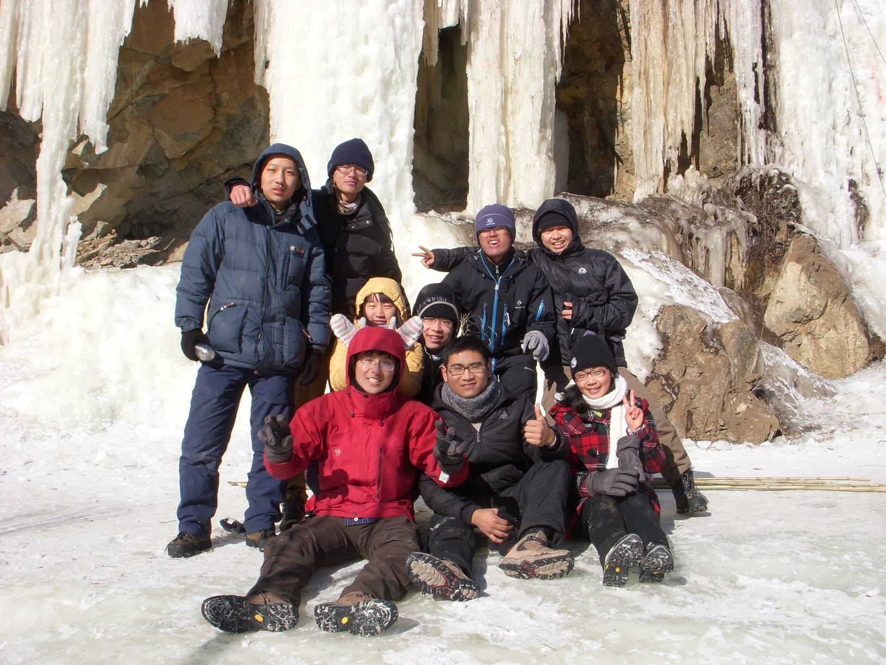
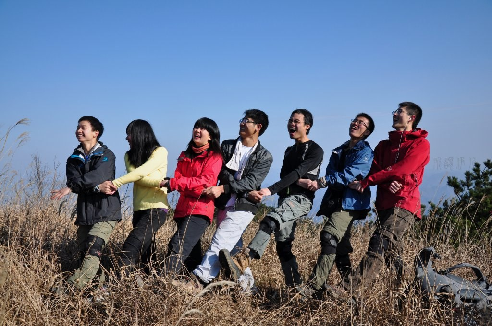

发信人: hemind(hooft), 信区: outdoor
标 题: 几张旧照片
发信站: 饮水思源 (2014年12月29日20:00:22 星期一)
13年的大明山@牵牛岗，如今高楼耸立
 screen.width - 200){this.width = screen.width - 200}">
12年野协十周年，某俩激情过后
 screen.width - 200){this.width = screen.width - 200}">
十周年，刚刚考完研在干嘛呢；旁边的那位，回来登山吧！
 screen.width - 200){this.width = screen.width - 200}">
12年某日，南体一棵树下
 screen.width - 200){this.width = screen.width - 200}">
12年北京冬训
 screen.width - 200){this.width = screen.width - 200}">
11年大明山冬训，经典姿势
 screen.width - 200){this.width = screen.width - 200}">
07级的毕业旅行，回忆满满

--
Physics is to math what sex is to masturbation.
※ 来源:·饮水思源 bbs.sjtu.edu.cn·[FROM: 58.196.144.15]
|